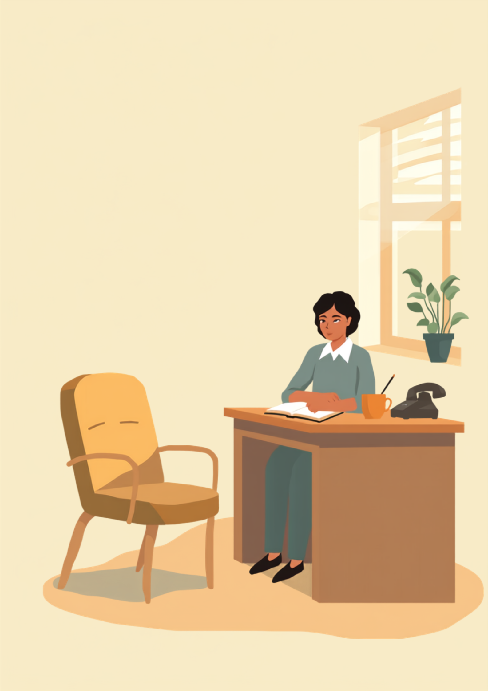

「また来週」。面談の最後、その人はいつもと同じ軽い調子でそう言って椅子から立ち上がった。次の週、その人は来なかった。
PR



いつも座っていた椅子が、その日から空いたままになった
「また来ます」と言って、その人は来なかった

就労移行支援は、一般的に週に数回のペースで事業所に通いながら、就職に向けた準備や職場探しを進めていく支援です。通所の頻度や内容は事業所や本人の状況によって幅があります。まめざる
その人は、毎週決まった曜日に来ていた。「また来週」という一言は、面談の締めくくりとして何十回も聞いてきた言葉で、正直あまり気にも留めていなかった。次の週、来なかった。その次の週も。
最初は、風邪か何かだろうと思っていた。連絡がなくても、数日様子を見てから電話をかける。それが自分にとっての「普通の対応」だった。予定表には、その人の名前の横に小さく「体調不良？」とだけ書いた。大丈夫そうな人だったから、という理由で、電話をかけるのを一日、また一日と後回しにした。
!
この記事は就労支援員おのざる自身が経験したことをもとに、複数の場面や時期を組み合わせて書いています。特定の一人を指すものではなく、来なくなった理由や経緯には個人差があります（2026年9月時点の情報です）。
電話をかけても、出なかった
一週間後、ようやく電話をかけた。出なかった。留守番電話にメッセージを残した。折り返しはなかった。もう一度かけた。同じだった。
そこでやっと、自分の中で何かがずれていたことに気づいた。「大丈夫そうだから」という理由で対応を後回しにしていたのは、相手の状態を見ていたからではなく、自分の中にあった見立てを疑っていなかっただけだった。面談のたびに笑って話していたから、忙しくて来られないだけだろうと、勝手に決めつけていた。
「最初は本当に大丈夫だったんです。でもだんだん『もう大丈夫って言っちゃったし』みたいな空気になっていって、しんどいって言うタイミングがなくなっていきました。休んだ日の次に行ったときも、結局また『大丈夫です』って言っちゃって。それで、そのまま行かなくなりました。今思うと、あのとき一回でも『実はちょっと』って言えてたら、違ったのかもって思います。」
20代・女性（精神障害・事務職／自分が関わった相談者の一人）
「支援員さんに心配かけたくなかったんですよね。面談のたびに順調ですって言ってる自分に、だんだん嘘つき感みたいなのが出てきて。それで電話が来ても出られなくなって、そのまま気まずくて連絡取れなくなりました。今なら、そんな大げさに考えなくてよかったのになって思います。」
30代・男性（発達障害・製造業／自分が関わった相談者の一人）
「大丈夫そう」という確信は、一本の電話で簡単に崩れた
i
連絡が取れなくなった背景には、体調の悪化だけでなく、支援員に本音を言いづらくなっていたなど、様々な理由が重なっていることがあるとされています。一つの理由に決めつけず、複数の可能性を残しておくことが助けになる場合があります。
見立てを疑うようになった
その人とは、結局しばらくしてから改めて連絡が取れた。詳しい事情はここには書かないが、「大丈夫です」と言い続けていたことと、それを疑わずに受け取っていたことの両方が、じわじわと積み重なっていたのだと分かった。
自分がしていたのは、相手の様子を見ることではなく、自分の見立てを確認することだったのかもしれない。「大丈夫そうだ」という判断は、相手の状態そのものより、こちらが安心したいという気持ちに寄りかかっていた部分があった。
面談での聞き方を変えてから（複数の場面を組み合わせた一例）
まめざる
教えてくれてありがとうございます。今週、一番しんどかったのはどんな場面でしたか。
相談者
朝、起きてから家を出るまでが一番きついです。行かなきゃって分かってるのに、体が動かなくて。
まめざる
それは体力的にもかなり削られますよね。来られない日があっても、その一言だけ先に教えてもらえると、こちらも急かさずに次を考えられます。
「大丈夫」を聞き方の終点にしない
今は、「大丈夫ですか」で面談を終えないようにしている。代わりに、「今週、一番大変だった場面はどこでしたか」というふうに、具体的な出来事を一つ尋ねるようにしている。大きな質問には大きな建前で答えが返ってくるが、小さな質問には、小さな本音が混ざって出てくることがあると感じている。
今、面談で気をつけていること
連絡が取れなくなってから、面談の終わり方を少しずつ変えた。とはいえ、すべての「大丈夫」を疑ってかかるわけではない。本当に落ち着いて過ごせている人もいるし、疑うことばかりが目的になっては本末転倒だと思っている。
- 「大丈夫ですか」を面談の最後の質問にしない
- 来られない日があったら、理由は聞かずに一言だけ連絡してほしいと先に伝えておく
- 電話に出なかった日は、一日置かずにもう一度かける
- 「大丈夫そう」という自分の判断を、そのまま記録に残さない
「大丈夫そう」という見立ては、支援員にとって都合のいい安心材料になりやすいと言われています。その判断を疑う癖をつけておくことが、次の変化に気づく助けになる場合があるようです。まめざる
「また来ます」は、その場では嘘ではなかったのだと思う。ただ、その一言を疑わずに受け取ったのは自分だった。今は、大丈夫そうに見える人ほど、もう一歩だけ具体的に聞くようにしている。
よくある質問
Q. 就労移行支援に通うのが辛くて、行かなくなってしまいそうです。連絡もしにくいのですが、どうしたらいいですか？
連絡をためらう気持ちは自然なことだとされています。ただ、来られない状況を一言だけでも支援員に伝えておくと、無理に急かされることなく次の一歩を一緒に考えやすくなる場合があります。電話が難しければ、メールやメッセージなど負担の少ない手段を使ってみるのも一つの方法です。
Q. 支援員に「大丈夫です」と言い続けてしまいます。本音を伝えるコツはありますか？
「大丈夫です」以外の答え方を最初から用意しておく必要はないとされています。「実はここ最近、朝起きるのがつらい」など、具体的な場面を一つ挙げるだけでも、支援員が状況を把握しやすくなる場合があります。
Q. 支援員側も、相談者が来なくなった経験にショックを受けたりするものなのですか？
支援員によって感じ方は様々ですが、担当していた相談者と連絡が取れなくなった経験を通して、自分の関わり方を見直すきっかけになったと感じる支援員は少なくないようです。
Q. 一度通えなくなった就労移行支援に、また戻ることはできますか？
事業所や状況によって対応は異なりますが、一定期間が空いても再開の相談を受け付けている事業所はあるとされています。気になる場合は、通っていた事業所や自治体の窓口に直接問い合わせてみることをお勧めします（2026年9月時点の情報です）。
階段を上るように、面談での聞き方が少しずつ変わっていった
PR


一人で抱え込む前に、今の気持ちを話してみませんか
「まだ迷っている」段階でも大丈夫です。mimemimeの無料相談は、今の状況の整理から一緒に始められます。
無料で話してみる
この記事に、聞いてみたいことはありますか？
「自分の場合はどうなんだろう」と思ったことを、気軽に書いてみてください。いただいた質問は個別にお返事したうえで、匿名で記事にすることがあります。
おのざる
mimemime代表。就労支援の現場経験をもとに、障がいのある方の働く不安に寄り添う記事を執筆。